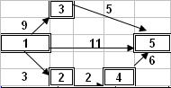
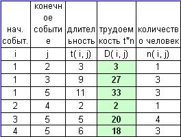
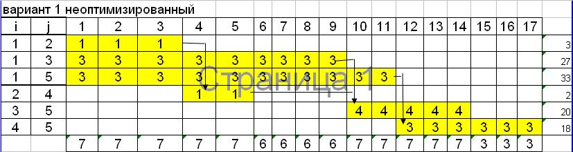
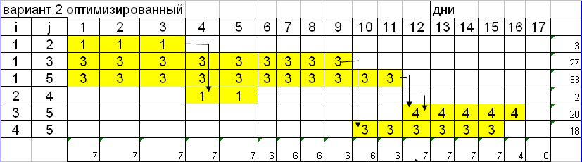
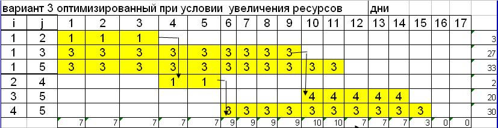

Пример 1
Сетевой график - необходимый элемент сложного производства, состоящего из нескольких связанных и зависящих друг от друга этапов. Выявление критического пути и временных резервов производства - основная задача, решаемая построением сетевого графика. Такие задачи могут быть представлены в виде графа и в виде отображающей его таблицы. Для нахождения критического пути (последовательности этапов работы, определяющих длительность всего проекта и не имеющих резерва по времени) применяются вычислительные методы. Одним из таких методов является табличный метод и применяется для данных, представленных в виде таблицы.
Дано: сетевой граф, рис.9.15.
Вершины графа - этапы работ.
Рёбра графа - выполнение работы. Рёбра имеют длину, обозначающую продолжительность работы и направление, обозначающее последовательность выполнение работы.

Рисунок 9.15 - Сетевой график А
Требуется найти:
- Минимальное количество человек для выполнения проекта с работами 1- 5 сетевого графика А.
- Критический путь и работы критического пути.
- Сформировать календарный график выполнения.
- Произвести оптимизацию графика.
На сетевом графике A все операции могут производиться с постоянной интенсивностью потребления ресурсов.
Число ресурсов для каждой операции фиксировано.
На основании данных графа и количества человек для каждой операции заполним результирующую таблицу.
В таблице на рис.9.16 представлены исходные данные решения задачи, где
i - номер начального события;
j - номер конечного события;
t (i, j) - продолжительность операции;
n (i, j) - требуемое число людских ресурсов;
D (i, j) - трудоемкость операции в чел/дн., вычисляется как t (i, j) х n (i, j).

Рисунок 9.16 - Исходные данные
1. Работы 1-2, 1-3, 1-5 выполняются параллельно.
Работы 2-4, 3-5 выполняются тоже параллельно, а работа 4-5- является последовательной.
Однако т.к. длительность работы 2-4 составляет 2 дня, то мы формируем 2 блока параллельных работ.
Это 1-й блок работ 1-2, 1-3, 1-5 3-5 , и 2-й блок работ 2-4, 3-5, 4-5.
Для 1-го блока максимальное количество людей =3, а для 2-го - 4 человека.
Т.е. на выполнение операций, представленных в сетевом графике A на рис.9.15 выделено всего 7 человек.
2. Согласно рис.9.15 найдем длительность для каждого из возможных вариантов прохождения графа от первой до последней вершины
Длительность работ 1-3-5 составляет 14 дней,
Длительность работ 1-5 составляет 11 дней,
Длительность работ 1-2-4-5 составляет 11 дней.
Критический путь составляет 14 дней , а работы 1-3-5 являются критическими работами.
3. После заполнения результирующей таблицы и расчета критического пути сформируем календарный график выполнения.

Рисунок 9.17 - Распределение ресурсов (вариант 1)
.
На третьем шаге распределения ресурсов предпочтение отдано операции (3-5), которая в сетевом графике рис.9.15 находится на критическом пути, а не операции (4-5), имеющей резерв времени.
Рассмотрим другой возможный вариант распределения этих же ресурсов, отдав предпочтение на третьем шаге операции (4-5), имеющей резерв времени, а не операции (3-5), лежащей на критическом пути. Результаты этого случая представлены на рис.9.18

Рисунок 9.18 - Распределение ресурсов (вариант 2)
Рисунок 9.19 демонстрирует оптимизацию в длительности всего проекта в 15 дней, но при условиии увеличения количества людей с 6-го по 11-й день.

Рисунок 9.19 - Распределение ресурсов (вариант 3)